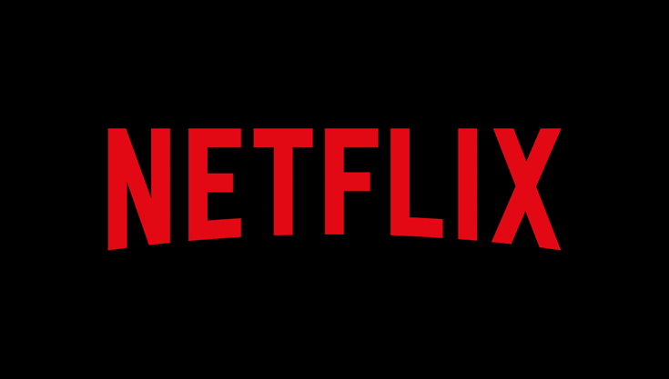

beberapa film yang wajib kalian tonton minimal sekali dalam hidupmu
Film asal Spanyol ini mengangkat kisah pengungkapan misteri pembunuhan. Sebelum persidangan, sang pengacara meminta kliennya untuk memaparkan peristiwa kejadian secara terperinci. Tak disangka, ternyata kesaksiannya berujung pada kasus lain yang sengaja dia tutupi sekian lama. Menghadirkan double plot twist, kamu akan terheran-heran dengan ending-nya.

Salah satu film yang digadang-gadang disebut terbaik sepanjang masa ialah THE GODFATHER. Film THE GODFATHER merupakan film yang menceritakan tentang kehidupan mafia di masa lampau yang lekat dengan tindak kriminal, kekerasan, bisnis illegal, penindasan, pembunuhan.
Film THE GODFATHER disajikan dalam bentuk trilogy. Ketiga seri THE GODFATHER selalu dikagumi pecinta film dan sukses besar. Tak tanggung-tanggung, film yang disutradarai Francis Ford Coppola ini tercatat pernah 11 kali masuk di Academy Award. Salah satunya, kategori best actor yang dimenangkan oleh aktor Marlon Brando.
Rekomendasi film terbaik sepanjang masa berikutnya berjudul THE DAVINCI CODE. Film ini merupakan adaptasi dari novel dengan judul yang sama karya Dan Brown. THE DAVINCI CODE bercerita tentang kejadian pembunuhan di Louvre di Paris yang menyita perhatian publik
Pasalnya, kasus pembunuhan tersebut terungkap melalui sandi yang tersembunyi di karya seni Leonardo da Vinci. Sandi tersebut mengarahkan pada pengungkapan sebuah misteri besar. Menonton THE DAVINCI CODE, penonton akan dihantui penasaran dengan teka-teki yang yang harus dipecahkan. Jika penasaran, langsung saja tonton THE DAVINCI CODE!
dan masih banyak lagi film menarik yang bisa kamu tonton secara Exclusive dengan menggunakan aplikasi NETFLIX
dan untuk mendaptkan film terbaik secara Exclusive menggunakan NETFLIX dengan murah dan mudah bisa klik tombol "berlangganan" diatas
NETFLIX